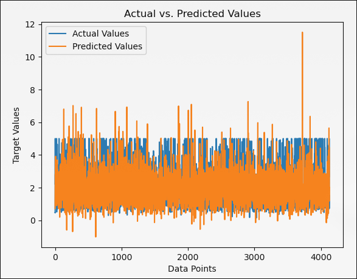

Abstract
This article provides a comprehensive overview of two machine learning algorithms: linear regression and decision trees. The content is structured to provide readers with a clear understanding of both methodologies, including their theoretical foundations, practical applications and comparative analysis.
The opening section sets the stage for understanding subsequent discussions. It contains summaries, statements and acknowledgments necessary to set the context of the study.
The document covers linear regression, starting with an introduction to linear algebra concepts important to regression analysis. It examines univariate statistics, which include mean, deviation, standard deviation, and variance. Multivariate statistics, including covariance and correlation, are discussed in detail.
Linear regression models are presented, explaining the nature of regression analysis, the principles of linear regression, and scenarios where linear regression proves particularly effective.
Moving on to decision trees, the paper provides an overview of how they work, including condition indices, indices such as the Gini index and the Palma ratio, and the process of mapping variables to a decision.
The section on decision tree models provides an overview of their applications and cases where decision trees excel at solving complex problems.
Finally, the article synthesizes key points from the discussions on linear regression and decision trees. It contrasts the strengths and weaknesses of each approach and provides perspective on when to use one or the other in the context of a problem.
Finally, the References and Citations section provides a comprehensive list of the resources used in the document, ensuring transparency and making it easier to delve into the topics covered.
In conclusion, this document is a valuable resource for people interested in understanding linear regression and decision trees, their applications, and their roles in machine learning and data analysis..
Declaration
I, Bhashkar Paudyal hereby declare the following:
-
The content material provided on this file, consisting of however now no longer confined to text, diagrams, and references, is unique and has been created totally for the motive of instructional or informational dissemination.
-
Any outside reassets, consisting of books, articles, websites, and publications, applied withinside the advent of this file had been as it should be referred to and referenced withinside the "References and Citations" section.
-
I take complete duty for the accuracy, completeness, and integrity of the statistics furnished herein. Any mistakes or omissions are accidental and do now no longer undermine the general validity of the file.
-
This file does now no longer infringe upon any highbrow assets rights, consisting of copyright, trademarks, or patents. All images, illustrations, and text used from outside reassets had been acquired with right authorization or fall below truthful use guidelines.
-
The evaluations, insights, and interpretations expressed on this file are primarily based totally on non-public knowledge, research, and information of the issue matter. They do now no longer always replicate the perspectives or evaluations of any organization, institution, or person related to the author.
-
I verify my dedication to uphold instructional integrity and scholarly concepts in all factors of my work.
Bhashakar Paudyal
2024, 02 Feb, Friday.
Acknowledgements
I extend my sincere gratitude and appreciation to all individuals and resources that contributed to the completion of this document.
I am grateful to the authors and researchers whose works have served as sources of inspiration and knowledge for this document. Their contributions to the field of Machine Learning have been instrumental in shaping my understanding and perspective on the subject matter.
I would also like to acknowledge the support and understanding of my family, friends, and colleagues, whose encouragement and patience have been a constant source of motivation and inspiration throughout this endeavor.
Finally, I extend my appreciation to all individuals, organizations, and institutions whose contributions, directly or indirectly, have played a significant role in the completion of this document.
Thank you.
Bhashkar Paudyal
Linear-Algebra
Linear algebra is a branch of mathematics that deals with vector spaces and linear mappings between these spaces.
Linear algebra is foundational in many areas of mathematics and has numerous applications in diverse fields, making it a crucial subject for students and practitioners alike. Understanding its concepts and techniques enables deeper insight into mathematical modeling, data analysis, and problem-solving strategies.
Linear Algebra deals with vectors, system of linear equations and their matrix representations and graphing.
Variables and Constants
Variables
Variables are the storages whose value changes.
For eg: The Inflation is a variable since its value changes with time.
A variable can hold anything, a vector, a number, a matrix, a set... anything!
Certain Operations in Variables are called functions. These functions evaluate to certain values or expressions so these functions themselves are variables.
In Python, x = input() stores a value input that can be anything.
The value of variable changes with change of objects.
Constants
Constants are the storages whose value doesn't change.
For eg: The value of pi.
A Constant can hold anything but what is holds cannot be reassigned or redeclared just like how you cannot reassign the value of pi to the value of e.
Certain operations on Constants only lead to a Constant. This is a constant expression.
The value of Constants doesn't change no matter what.
Equations and Linearity
What is an equation?
An equation is any set of physical quantities written as expressions that are equal.
For eg: x + y = 2
What is an inequality?
An inequality is any set of physical quantities written as expressions that are not equal.
For eg: x + y < 2
Types of inequalities
Greater Than
In this inequality, the left side is greater than the right side
For eg: 5 > 3
Less Than
In this inequality, the left side is less than the right side. For eg: 3 < 5
Greater than or equal to
In this inequality, the left side is greater than or equal to the right side For eg: 5 >= 3
Less than or equal to
In this inequality, the left side is less than or equal to the right side For eg: 3 <= 5
Inequality to equation
Consider x + y <= 5: Then to equate these quantities, we can use the equation x + y + s1 = 5. The s1 variable is a variable called slack variable. This slack variable is added to left side as the left side was smaller than the right side.
Again, Consider x + y <= 5: Then to equate these quantities, we can use the equation x + y - s1 = 5. The s1 variable is a variable called slack variable. This slack variable is subtracted to left side as the left side was greater than the right side.
In both examples we didn't assign any sign to the slack variable s1. This is called unsigned variable or basic variable.
In the above examples, we have used the slack variable s1 to make the equation out of an inequality.
Algebraic expressions
Any equation can be written in the form of algebraic expressions being equal. In the previous case, x and y were used to denote any number. So this notation can be used for two variables.
But what if there are more than two variables? Then we can use x1,x2,x3,x4... These variables can be called algebraic variables.
Any combination of these variables are used to make an algebraic expression.
Polynomial
Any algebraic expression written in the form of purely non fractional addition or subtraction of algebraic expressions is called a polynomial.
For eg: x+y, x^2 + y
Degree
Degree of a polynomial is the highest sum of the power of all the variable in the polynomial.
Consider x + y, here the highest sum of the power of all the variable is 1. So the degree is 1.
Consider x + xy, here the highest sum of the power of all the variable is 2. So the degree is 2.
From above example, we can conclude that the degree of a polynomial is the highest sum of the power of all the variable in the polynomial.
Linear polynomials
Any polynomial of degree 1 is called linear polynomial.
For eg: 2x + 3y + 4 is a linear polynomial but 2x^3 + 3y^3 + 4 is not linear polynomial.
Linear equations
Any equation where linear polynomial are equal is called linear equation.
For eg: 2x + 3y + 4 = 5 is a linear equation but 2x^3 + 3y^3 + 4 = 5 is not linear equation.
Linear inequalities
Any inequality where linear polynomial are not equal is called linear inequality.
For eg: 2x + 3y + 4 < 5 is a linear inequality but 2x^3 + 3y^3 + 4 < 5 is not linear inequality.
Solving linear equations
There are many methods to solve a given system of linear equations. Some of these methods are:
- Row equivalent matrix method
- Inverse matrix method
- Gauss Seidel approximation
- Gaussian elimination method
- Crammer's rule
By solving the system of linear equations, we can get the value of the unknown variables. These values when put back in the given set of equations will satisfy the given system of linear equations. This is true for all kinds of equations, but the method to solve differs as the degree increases.
Degree of a equation and inequalities
If polynomial are compared in the equations and inequalities with zero, the degree of the polynomial is the degree of the equation or inequality.
Solving linear inequality
To solve a given set of linear inequalities, first we need an objective. The objective is a function called objective function which is subject to the given set of linear inequalities. We try to maximize or minimize the objective function.
This can be done by checking all the possible combinations of values that are real numbers for all the variables and then checking whether the objective function is greater or smaller than the given objective.
Hence an equation is linear if it is of degree 1.
Linear Graph
A line can be represented in the form of a graph. This is the most common graph representation. This type of graph is called linear graph.
The linear graph corresponds to two dimensions. comprising of two variables.
Here one is the function of other. Generally, the one that is the function is shown in vertical axis and the other in horizontal axis.

As show in the figure above, two point join to make a straight line.
Here, y is the function of x.
Single Variable Statistics
What is a Single variable data?
A data that only depends on one variable is a single variable data. This data can have certain property called field or attribute.
For eg, Marks of students:
Here, there is only one variable the marks which changes according to the student but the students aren't variables they do not change but the marks can change through different exams.
Statistics Applied to a single variable data in accordance to a set of objects is Single Variable Statistics.
Mean
Mean is representational value for a set of numbers.
It is represented by:
/popdiaries/media/post_banners/WzPXQCis3pYrHU3bw61B.jpg)
Mean mathematically is the sum of all values of x divided by the number of observations in the set of values.
Deviation
The difference between the particular value of x and the mean value of x is called the deviation.
This measures how far off from the representational value of the data is the value for a particular x.
The greater the mean deviation, The greater the data is spread out from the representational value of the data.
So to measure the overall deviation of the data, we can take the mean deviation of all the x values.
Variance
Variance is a measure of how spread out the data is.
It is the real number that represents how much of the variance is in the data.
- If variance if 0 all the data is same.
- If variance is high, then the data is spread out and the mean is not representative of the data.
- If the variance is low, then the data is close to the mean. And the mean is representative of the data.
Variance is never negative. As it is a sum and a square of a positive no that we will discuss in the next chapter called standard deviation.

Standard Deviation
Standard deviation is the square root of the variance.
It measures how much the values deviate from the mean. It is the most used measure for determining the dispersion of a dataset.
Standard deviation is often considered more significant than variance because it is expressed in the same units as the original data, making it more interpretable and easier to compare across different datasets.

Multi Variable Statistics
Multi-variable statistics, also known as multivariate statistics, deals with the analysis of data sets that involve more than one variable. In contrast to univariate statistics, which focus on analyzing a single variable at a time, multivariate statistics examine the relationships and interactions between multiple variables simultaneously.
Covariance

Source : Calculatored
{kind=link}
- Covariance is a statistical tool used to determine the relationship between the movements of two random variables
- When two stocks tend to move together, they are seen as having a positive covariance; when they move inversely, the covariance is negative.
- Covariance is different from the correlation coefficient, a measure of the strength of a correlative relationship.
Correlation
Correlation is a measure of the strength of linear relationship between two variables.
Correlation ranges from -1 to 1. A correlation of -1 indicates that the two variables are inversely related, and a correlation of 1 indicates that the two variables are positively related.
Correlation is used in statistical analysis to determine whether two variables are related to each other or not.
If r i.e correlation coefficient is greater than +- 0.7 then it is highly correlated. If r is greater than +- 0.3 then it is moderately correlated If r = 0 then they are not correlated.

Linear Regression
Linear regression is a fundamental statistical technique used to model the relationship between a dependent variable and one or more independent variables by fitting a linear equation to observed data. It is widely employed in various fields such as economics, finance, social sciences, engineering, and machine learning for predictive modeling and inference tasks.
A linear equation is in the form of y = ax_1 + b_x_2 + cx_3 + ... + z. Where y is the dependent variable, x_1, x_2, x_3, ...,x_n are independent variables and a, b, c, ... are coefficients and z is a constant.
What is Regression?
Regression, in general, refers to a statistical method used to model the relationship between one or more independent variables and a dependent variable. It aims to understand how changes in the independent variables are associated with changes in the dependent variable.
The core idea of regression analysis is to estimate the parameters of a mathematical model that best describes the relationship between the variables. The model can then be used for prediction, inference, and understanding the underlying mechanisms or patterns in the data.
The regression equation expresses the relationship between the independent variables and the dependent variable. It can be linear or nonlinear, depending on the nature of the relationship.
Linear Regression
Linear Regression, refers to a statistical method used to model the relationship between one or more independent variables and a dependent variable having a linear relationship.
The core idea of Linear regression analysis is to estimate the parameters of a linear equation that best describes the relationship between the variables. The model can then be used for prediction.
The Linear regression equation expresses the relationship between the independent variables and the dependent variable. It is always linear as this regression assumes linearity of the data. i.e when x changes y changes with a constant ratio and a bias factor which is seen as the constant in the linear equation.
So if the variables have a exponential relationship, the equation will give a very inaccurate prediction.
So we need to determine if the relationship is linear or not before doing linear regression analysis.
So In this case the best and most used methods are :
- Scatter plot
- Correlation coefficient
If there are certain segments where the ratio and bias are different, one can use different correlation coefficients to fit into many linear regression equation.
Better Case for Linear-Regression
Linear Regression is a good fit for data that follows a straight line, like a line on a graph. That means there should be a pattern if the data.
The following are the areas where linear regression is a good fit:
-
Linear Relationships: Linear regression is like drawing a straight line to connect the dots on a graph. If the dots (or data points) roughly follow a straight line pattern, then linear regression works well because it can predict what the next dot might be.
-
Interpretability: Linear regression tells us how much one thing affects another. For example, if we're trying to figure out how much studying affects test scores, linear regression helps us understand how much studying more might increase our test scores.
-
Prediction with Continuous Variables: Linear regression is good at predicting things that keep changing smoothly, like temperature or price. It's like guessing tomorrow's weather based on today's temperature.
-
Statistical Inference: Linear regression helps us make educated guesses about a whole group of things based on a smaller sample. It's like looking at a few pieces of a puzzle and guessing what the whole puzzle might look like.
-
Stability and Robustness: Linear regression is not easily thrown off by small changes in data. It's like having a ruler that stays straight even if you shake it a little.
-
Feature Importance and Variable Selection: Linear regression helps us figure out which factors matter the most in making predictions. For example, if we want to predict how tall someone will be, linear regression helps us decide if age or nutrition matters more.
-
Predictive Power in Linear Relationships: When things change in a simple, straight-line way, linear regression is very good at predicting what comes next. It's like knowing that if you study one more hour, your test score might go up by a certain amount.
But sometimes, data doesn't follow straight lines. It can be all over the place, like a squiggly line or even a pattern that looks like a tree. In those cases, linear regression doesn't work well. That's when we might use decision trees, which are better at handling complex and non-linear relationships in data.
So, choosing between linear regression and decision trees depends on how the data behaves and what we want to find out. If things change in a nice, straight-line way, linear regression is great. But if the data is messy and doesn't follow a clear pattern, we might need a decision tree to help us make sense of it.
For example in python
from sklearn.linear_model import LinearRegression
from sklearn.datasets import fetch_california_housing
from sklearn.model_selection import train_test_split
from sklearn.metrics import mean_squared_error
california_housing = fetch_california_housing(as_frame=True)
X = california_housing.data
y = california_housing.target
X_train, X_test, y_train, y_test = train_test_split(X, y, test_size=0.2, random_state=42)
linear_reg = LinearRegression()
linear_reg.fit(X_train, y_train)
predictions = linear_reg.predict(X_test)
mse = mean_squared_error(y_test, predictions)
print("Mean Squared Error:", mse)
import matplotlib.pyplot as plt
plt.scatter(y_test, predictions, alpha=0.5)
plt.xlabel("Actual Values")
plt.ylabel("Predicted Values")
plt.title("Actual vs. Predicted Values")
plt.show()
Gives the following output:

Here the predicted values are not accurate since there is no linearity in the data.
Check for linearity
To check for linearity we use correlation coefficient. The correlation coefficient is a measure of how much two variables change together in a linear manner. If they change in a exponential manner the prediction will not be accurate.
In this case,
Correlation Coefficient: -0.017732492614194486
Which means that the correlation is near to zero and a linear relationship is not found.
So it is not good to apply linear regression here. This fact is clearly represented by the following line plot.

Working Principal
Decision tree is a popular way to classify data. It is also known as classification tree.
It uses conditionals to divide the data into groups.
The data is divided into groups based on the conditions and further classified into different groups.
These leads to a classification tree.
Conditionals
A conditional refers to a rule or criterion used to split the data at a node into smaller subsets.
The conditions are based on different index:
- Gini Index
- Palma Ratio
Gini Index
Imagine you have a set of apples and oranges mixed together. You want to separate them efficiently. Gini index tells you how likely you are to grab the wrong fruit (misclassify) if you pick one at random from the current set. By splitting the set based on features like color or size, you aim to create smaller sets with lower Gini index (mostly apples or mostly oranges), making it easier to correctly classify future fruits.
Now if you got the intuition we proceed to define some terms:
- Homogeneity: Refers to the degree of similarity within a group. In decision trees, a node is considered homogeneous if all data points belong to the same class (e.g., all apples in a set).
- Classification accuracy: Measures how well a model can correctly classify new data points into predefined categories.
- Attribute (feature): In machine learning, an attribute represents a specific characteristic of the data used to make predictions. For example, in the fruit example, "color" and "size" are attributes.
- Node: A decision point in a decision tree, where the data is split based on a specific attribute.
- Child node: A node resulting from splitting another node (parent node) based on an attribute.
- Information gain: Another measure of impurity used in decision trees, which calculates the decrease in uncertainty about the class labels after splitting a node.
The Gini index is a measure of impurity, used to assess the homogeneity of a node in a decision tree. It helps determine the best attribute (feature) to split a node to improve the classification accuracy of the tree.
Key points about Gini index in decision trees:
- Range: 0 (perfectly pure node) to 1 (perfectly impure node)
- Interpretation:
- Lower Gini index indicates a purer node, where most data points belong to the same class.
- Higher Gini index indicates a more impure node, where data points are mixed across different classes.
- Interpretation:
- Function: Used to select the split that minimizes the Gini index, leading to purer child nodes further down the tree.
- Alternatives: Palma Ratio is another common measure of impurity used in decision trees.
What is impurity in decision trees?
Impurity tells you how uncertain you are about the class label of a data point if you were to pick one at random from that node.
It is the mean of the squared distances from the data point to its class label:
Gini(D) = 1 - Σ(pi)²
Example:
Imagine a node with 10 data points, 4 spam emails, and 6 non-spam emails.
Gini(D) = 1 - (0.4)² - (0.6)² = 0.48
Here the data indicates a moderately impure node, with a 48% chance of misclassifying a random email.
Variable to Decision
A decision tree starts with all its variables and tries to classify the data points. This selects andquot;bestandquot; variable (using additional measures) to divide the data, creating cleaner groups. This division by variables and their values continues until each group (leaf node) has essentially similar data points representing a final decision or classification. Think of it as a choose-your-own-adventure story where each choice (variable value) gets you closer to the answer (leaf node). This recursive process transforms the variables into clear decisions, making the tree a powerful classification and prediction tool.
Decision-Tree
A decision tree is like a "choose your own adventure" for data. Imagine you have a basket of fruits and you want to sort them by type. The decision tree begins with a simple question: Is the fruit green or red? Based on your answer, you follow a specific branch to either green or red fruits. With each new branch, another question guides you - is the green fruit big or small? Is the red fruit round or oblong? By answering these successive questions, you will eventually reach the "leaf node" which tells the final category (eg apple, orange).
This structure transforms decision trees into efficient learning algorithms. They build a set of rules from the data, query at each node and follow the response path to a final prediction. This is useful for tasks such as classifying emails as spam, approving loan applications or forecasting customer turnover. Decision trees are easy to understand and interpret, making them valuable tools for exploring data and making informed decisions. However, they may be prone to overfitting and may not capture complex relationships between variables. Although decision trees are not perfect in every situation, they are still a popular and versatile choice for many data analysis tasks.
Better Case for Decision-Tree
It is used when the target variables are discrete or categorical, with branching happening usually through binary partitioning. For example, each node may branch on a yes or no answer. Classification trees are used when the target variable is categorical, or can be given a specific category such as yes or no.
For eg: Lets take iris dataset as an example.
Code:
from sklearn.tree import DecisionTreeClassifier, plot_tree
from sklearn.datasets import load_iris
from sklearn.model_selection import train_test_split
from sklearn.metrics import accuracy_score
import matplotlib.pyplot as plt
iris = load_iris()
X = iris.data
y = iris.target
X_train, X_test, y_train, y_test = train_test_split(X, y, test_size=0.2, random_state=42)
dt_classifier = DecisionTreeClassifier(random_state=42)
dt_classifier.fit(X_train, y_train)
predictions = dt_classifier.predict(X_test)
accuracy = accuracy_score(y_test, predictions)
print("Decision Accuracy:", accuracy)
The decision accuracy is 1.
This was a classification problem. So decision tree was a good model for this problem.
Contrast
Decision tree is used when the target variables are discrete or categorical, with branching happening usually through binary partitioning. For example, each node may branch on a yes or no answer. Classification trees are used when the target variable is categorical, or can be given a specific category such as yes or no.
Choosing between linear regression and decision trees depends on how the data behaves and what we want to find out. If things change in a nice, straight-line way, linear regression is great. But if the data is messy and doesn't follow a clear pattern, we might need a decision tree to help us make sense of it.
References
Pictures
- https://d1avenlh0i1xmr.cloudfront.net/cbcfa568-517b-4f90-8f18-a9553f3fe34b/slide19.jpg
Bibliography
-
Hastie, T., Tibshirani, R., & Friedman, J. (2009). The Elements of Statistical Learning: Data Mining, Inference, and Prediction (2nd ed.). Springer.
-
James, G., Witten, D., Hastie, T., & Tibshirani, R. (2013). An Introduction to Statistical Learning: with Applications in R. Springer.
-
Gelman, A., Carlin, J. B., Stern, H. S., Dunson, D. B., Vehtari, A., & Rubin, D. B. (2013). Bayesian Data Analysis (3rd ed.). CRC Press.
-
Bishop, C. M. (2006). Pattern Recognition and Machine Learning. Springer.
-
Friedman, J., Hastie, T., & Tibshirani, R. (2001). The Elements of Statistical Learning. Springer.
-
Murphy, K. P. (2012). Machine Learning: A Probabilistic Perspective. MIT Press.
-
Breiman, L., Friedman, J. H., Olshen, R. A., & Stone, C. J. (1984). Classification and Regression Trees. CRC Press.
-
Goodfellow, I., Bengio, Y., & Courville, A. (2016). Deep Learning. MIT Press.
-
Sutton, R. S., & Barto, A. G. (2018). Reinforcement Learning: An Introduction (2nd ed.). MIT Press.
-
Shalev-Shwartz, S., & Ben-David, S. (2014). Understanding Machine Learning: From Theory to Algorithms. Cambridge University Press.